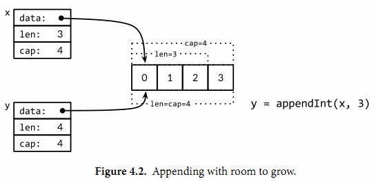

内置的append函数用于向slice追加元素：
var runes []rune
for _, r := range "Hello, 世界" {
runes = append(runes, r)
}
fmt.Printf("%q\n", runes) // "['H' 'e' 'l' 'l' 'o' ',' ' ' '世' '界']"在循环中使用append函数构建一个由九个rune字符构成的slice，当然对应这个特殊的问题我们可以通过Go语言内置的[]rune(“Hello, 世界”)转换操作完成。
append函数对于理解slice底层是如何工作的非常重要，所以让我们仔细查看究竟是发生了什么。下面是第一个版本的appendInt函数，专门用于处理[]int类型的slice：
gopl.io/ch4/append
func appendInt(x []int, y int) []int {
var z []int
zlen := len(x) + 1
if zlen <= cap(x) {
// There is room to grow. Extend the slice.
z = x[:zlen]
} else {
// There is insufficient space. Allocate a new array.
// Grow by doubling, for amortized linear complexity.
zcap := zlen
if zcap < 2*len(x) {
zcap = 2 * len(x)
}
z = make([]int, zlen, zcap)
copy(z, x) // a built-in function; see text
}
z[len(x)] = y
return z
}每次调用appendInt函数，必须先检测slice底层数组是否有足够的容量来保存新添加的元素。如果有足够空间的话，直接扩展slice（依然在原有的底层数组之上），将新添加的y元素复制到新扩展的空间，并返回slice。因此，输入的x和输出的z共享相同的底层数组。
如果没有足够的增长空间的话，appendInt函数则会先分配一个足够大的slice用于保存新的结果，先将输入的x复制到新的空间，然后添加y元素。结果z和输入的x引用的将是不同的底层数组。
虽然通过循环复制元素更直接，不过内置的copy函数可以方便地将一个slice复制另一个相同类型的slice。copy函数的第一个参数是要复制的目标slice，第二个参数是源slice，目标和源的位置顺序和dst = src赋值语句是一致的。两个slice可以共享同一个底层数组，甚至有重叠也没有问题。copy函数将返回成功复制的元素的个数（我们这里没有用到），等于两个slice中较小的长度，所以我们不用担心覆盖会超出目标slice的范围。
为了提高内存使用效率，新分配的数组一般略大于保存x和y所需要的最低大小。通过在每次扩展数组时直接将长度翻倍从而避免了多次内存分配，也确保了添加单个元素操的平均时间是一个常数时间。这个程序演示了效果：
func main() {
var x, y []int
for i := 0; i < 10; i++ {
y = appendInt(x, i)
fmt.Printf("%d cap=%d\t%v\n", i, cap(y), y)
x = y
}
}每一次容量的变化都会导致重新分配内存和copy操作：
0 cap=1 [0]
1 cap=2 [0 1]
2 cap=4 [0 1 2]
3 cap=4 [0 1 2 3]
4 cap=8 [0 1 2 3 4]
5 cap=8 [0 1 2 3 4 5]
6 cap=8 [0 1 2 3 4 5 6]
7 cap=8 [0 1 2 3 4 5 6 7]
8 cap=16 [0 1 2 3 4 5 6 7 8]
9 cap=16 [0 1 2 3 4 5 6 7 8 9]让我们仔细查看i=3次的迭代。当时x包含了[0 1 2]三个元素，但是容量是4，因此可以简单将新的元素添加到末尾，不需要新的内存分配。然后新的y的长度和容量都是4，并且和x引用着相同的底层数组，如图4.2所示。

在下一次迭代时i=4，现在没有新的空余的空间了，因此appendInt函数分配一个容量为8的底层数组，将x的4个元素[0 1 2 3]复制到新空间的开头，然后添加新的元素i，新元素的值是4。新的y的长度是5，容量是8；后面有3个空闲的位置，三次迭代都不需要分配新的空间。当前迭代中，y和x是对应不同底层数组的view。这次操作如图4.3所示。
内置的append函数可能使用比appendInt更复杂的内存扩展策略。因此，通常我们并不知道append调用是否导致了内存的重新分配，因此我们也不能确认新的slice和原始的slice是否引用的是相同的底层数组空间。同样，我们不能确认在原先的slice上的操作是否会影响到新的slice。因此，通常是将append返回的结果直接赋值给输入的slice变量：
runes = append(runes, r)更新slice变量不仅对调用append函数是必要的，实际上对应任何可能导致长度、容量或底层数组变化的操作都是必要的。要正确地使用slice，需要记住尽管底层数组的元素是间接访问的，但是slice对应结构体本身的指针、长度和容量部分是直接访问的。要更新这些信息需要像上面例子那样一个显式的赋值操作。从这个角度看，slice并不是一个纯粹的引用类型，它实际上是一个类似下面结构体的聚合类型：
type IntSlice struct {
ptr *int
len, cap int
}我们的appendInt函数每次只能向slice追加一个元素，但是内置的append函数则可以追加多个元素，甚至追加一个slice。
var x []int
x = append(x, 1)
x = append(x, 2, 3)
x = append(x, 4, 5, 6)
x = append(x, x...) // append the slice x
fmt.Println(x) // "[1 2 3 4 5 6 1 2 3 4 5 6]"通过下面的小修改，我们可以可以达到append函数类似的功能。其中在appendInt函数参数中的最后的“…”省略号表示接收变长的参数为slice。我们将在5.7节详细解释这个特性。
func appendInt(x []int, y ...int) []int {
var z []int
zlen := len(x) + len(y)
// ...expand z to at least zlen...
copy(z[len(x):], y)
return z
}为了避免重复，和前面相同的代码并没有显示。